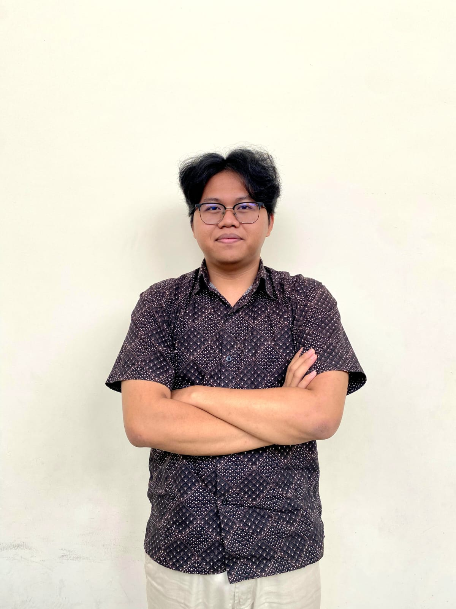
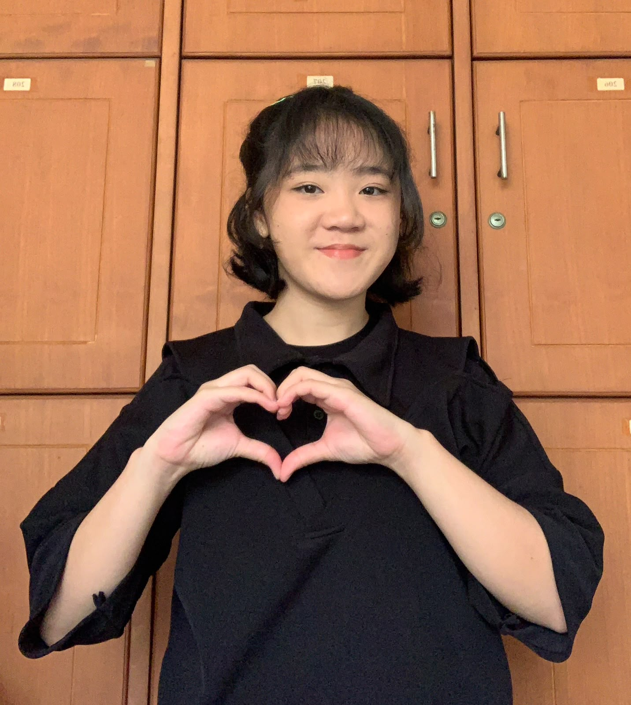
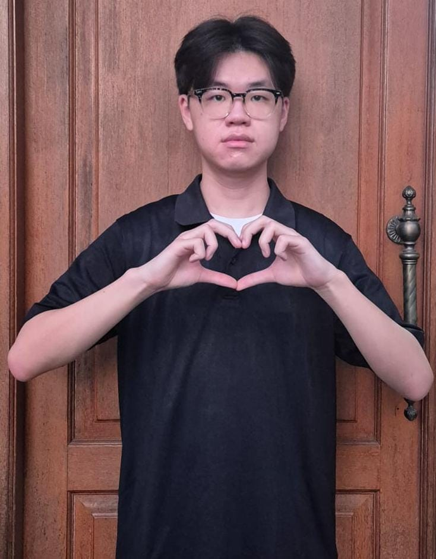
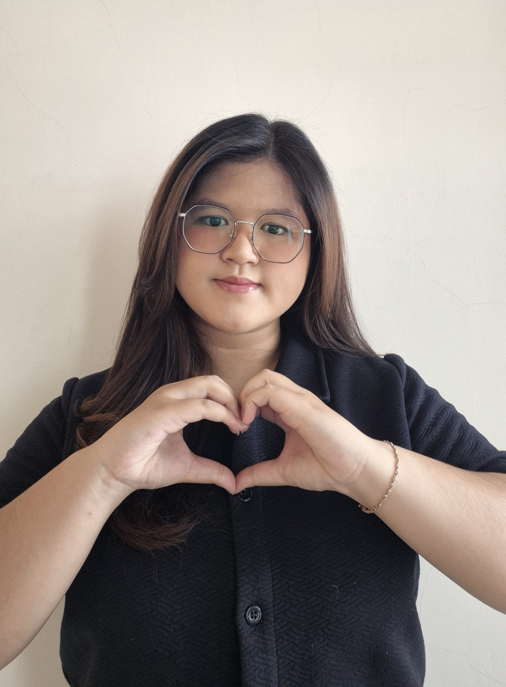
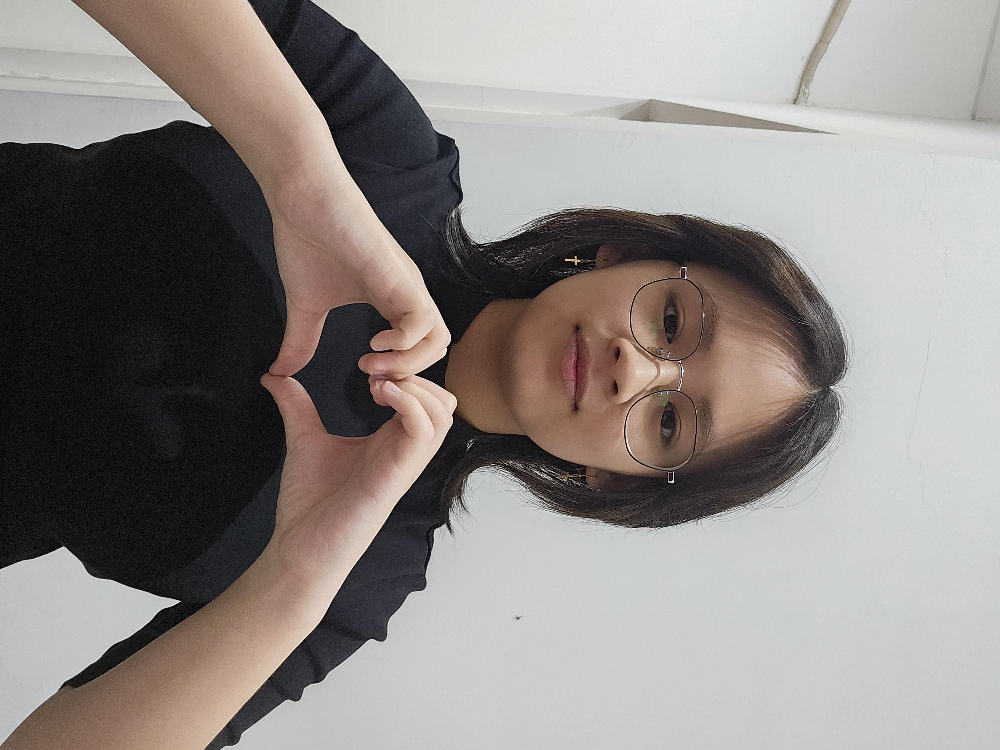
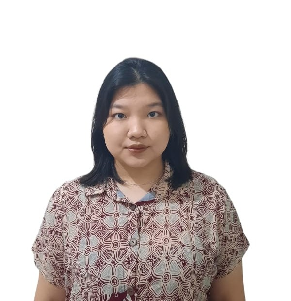
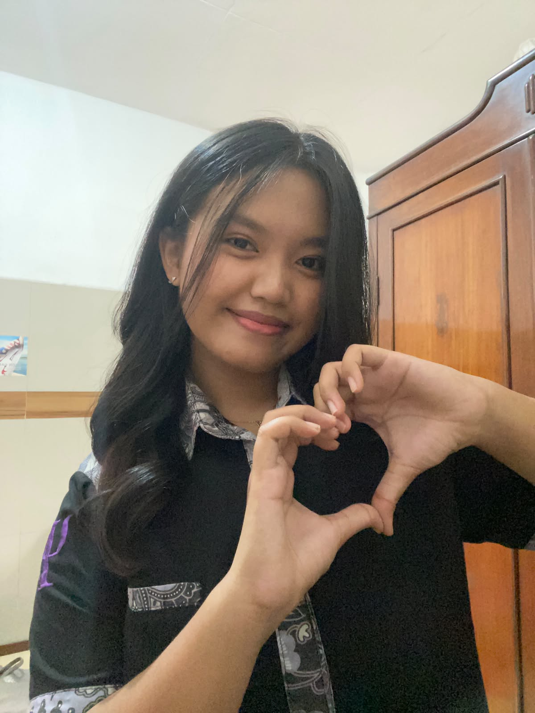

PROFIL ASISTEN
Meet the people behind the process!
Tim Asisten Dosen Pengukuran yang turut berperan dalam mendukung proses pembelajaran, membantu eksplorasi alat ukur psikologis, serta mendampingi perjalanan memahami dunia pengukuran psikologis.
Learning, exploring, and measuring together!

Kak Ofe

Kak Julius

Kak Kath

Kak Yujin
Kak Vio

Kak Jeje
